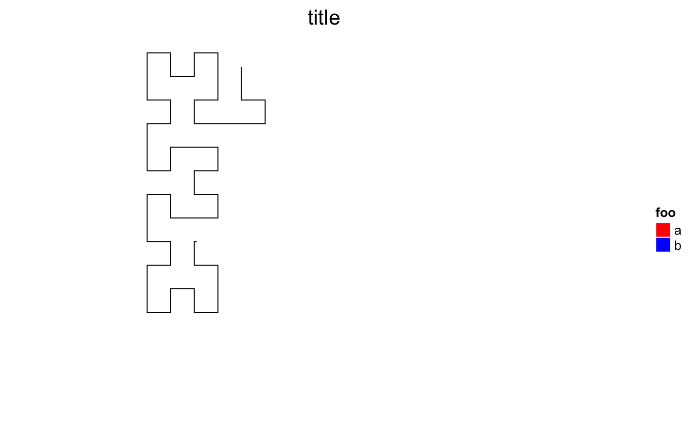

HilbertCurve.RdInitialize a Hilbert curve
HilbertCurve(s, e, level = 4, mode = c("normal", "pixel"), reference = FALSE, reference_gp = gpar(lty = 3, col = "#999999"), arrow = TRUE, zoom = NULL, newpage = TRUE, background_col = "transparent", background_border = NA, title = NULL, title_gp = gpar(fontsize = 16), start_from = c("bottomleft", "topleft", "bottomright", "topright"), first_seg = c("horizontal", "vertical"), legend = list(), padding = unit(2, "mm"))
| s | position that will be mapped as the start of the Hilbert curve. The value should a single numeric value. If it is a vector, the minimum is used. |
|---|---|
| e | position that will be mapped as the end of the Hilbert curve. The value should a single numeric value. If it is a vector, the maximum is used. |
| level | iteration level of the Hilbert curve. There will by |
| mode | "normal" mode is used for low |
| reference | whether add reference lines on the plot. Only works under 'normal' mode. The reference line is only used for illustrating how the curve folds. |
| reference_gp | graphic settings for the reference lines. It should be specified by |
| arrow | whether add arrows on the reference line. Only works under 'normal' mode. |
| zoom | Internally, position are stored as integer values. To better map the data to the Hilbert curve, the original positions are zoomed according to the range and the level of Hilbert curve. E.g. if the curve visualizes data ranging from 1 to 2 but level of the curve is set to 4, the positions will be zoomed by ~x2000 so that values like 1.5, 1.555 can be mapped to the curve with more accuracy. You don't need to care the zooming thing, proper zooming factor is calculated automatically. |
| newpage | whether call |
| background_col | background color. |
| background_border | background border border. |
| title | title of the plot. |
| title_gp | graphic parameters for the title. It should be specified by |
| start_from | which corner on the plot should the curve starts? |
| first_seg | the orientation of the first segment. |
| legend | a |
| padding | padding around the Hilbert curve. |
This funciton initializes a Hilbert curve with level level which corresponds
to the range between s and e.
Under 'normal' mode, there is a visible Hilbert curve which plays like a folded axis and different low-level graphics can be added afterwards according to the coordinates. It works nice if the level of the Hilbert curve is small (say less than 6).
When the level is high (e.g. > 10), the whole 2D space will be almost completely filled by the curve and
it is impossible to add or visualize e.g. points on the curve. In this case, the 'pixel'
mode visualizes each tiny 'segment' as a pixel and maps values to colors. Internally, the whole plot
is represented as an RGB matrix and every time a new layer is added to the plot, the RGB matrix
will be updated according to the color overlay. When all the layers are added, normally a PNG figure is generated
directly from the RGB matrix. So the Hilbert
curve with level 11 will generate a PNG figure with 2048x2048 resolution. This is extremely
useful for visualize genomic data. E.g. If we make a Hilbert curve for human chromosome 1 with
level 11, then each pixel can represent 60bp (249250621/2048/2048) which is of very high resolution.
Under 'pixel' mode, if the current device is an interactive deivce, every time a new layer is added,
the image will be add to the interactive device as a rastered image. But still you can use hc_png,HilbertCurve-method
to export the plot as PNG file.
To make it short and clear, under "normal" mode, you can use following low-level graphic functions:
And under "pixel" mode, you can use following functions:
Notice, s and e are not necessarily to be integers, it can be any values (e.g. numeric or even negative values).
A HilbertCurve-class object.
HilbertCurve(1, 100, reference = TRUE)HilbertCurve(1, 100, level = 5, reference = TRUE)HilbertCurve(1, 100, title = "title", reference = TRUE)HilbertCurve(1, 100, start_from = "topleft", reference = TRUE)#>#> #> #> #> #> #> #> #> #> #>legend = Legend(labels = c("a", "b"), title = "foo", legend_gp = gpar(fill = c("red", "blue"))) hc = HilbertCurve(1, 100, title = "title", legend = legend)# plot with more than one legend require(circlize) legend1 = Legend(labels = c("a", "b"), title = "foo", legend_gp = gpar(fill = c("red", "blue"))) col_fun = colorRamp2(c(-1, 0, 1), c("green", "white", "red")) legend2 = Legend(col_fun = col_fun, title = "bar") hc = HilbertCurve(1, 100, title = "title", legend = list(legend1, legend2))